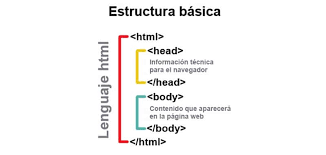
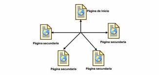

Programacion orientada a objetos (POO). Es un paradigma de programacion que usa objetos y sus interacciones, para diseñar aplicaciones y programas informaticos. Esta basado en varias tecnicas, incluyendo herencia, abstracción, polimorfismo y encapsulamiento.En la actualidad, existe variedad de lenguajes de programacion que soportan la orientación a objetos. 
La POO difiere de la programacion estructurada tradicional, en la que los datos y los procedimientos están separados y sin relacion, ya que lo único que se busca es el procesamiento de unos datos de entrada para obtener otros de salida. La programacion estructurada anima al programador a pensar sobre todo en terminos de procedimientos o funciones, y en segundo lugar en las estructuras de datos que esos procedimientos manejan. En la programacion estructurada solo se escriben funciones que procesan datos. Los programadores que emplean POO, en cambio, primero definen objetos para luego enviarles mensajes solicitandoles que realicen sus metodos por sí mismos.

Abstraccion Denota las caracteristicas esenciales de un objeto, donde se capturan sus comportamientos.Cada objeto en el sistema sirve como modelo de un "agente" abstracto que puede realizar trabajo, informar y cambiar su estado, y "comunicarse" con otros objetos en el sistema sin revelar como se implementan estas caracteristicas. Los procesos, las funciones o los metodos pueden tambien ser abstraidos y cuando lo estan, una variedad de tecnicas son requeridas para ampliar una abstraccion.El proceso de abstraccion permite seleccionar las caracteristicas relevantes dentro de un conjunto e identificar comportamientos comunes para definir nuevos tipos de entidades en el mundo real.

Encapsulamiento Significa reunir a todos los elementos que pueden considerarse pertenecientes a una misma entidad, al mismo nivel de abstraccion. Esto permite aumentar la cohesion de los componentes del sistema. Algunos autores confunden este concepto con el principio de ocultacion, principalmente porque se suelen emplear conjuntamente.